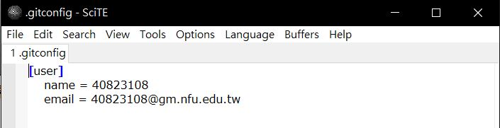
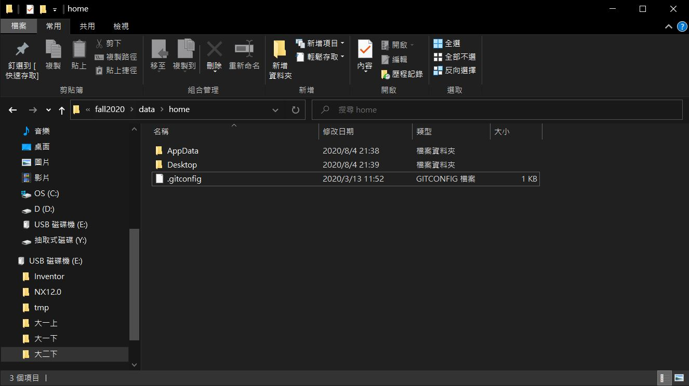
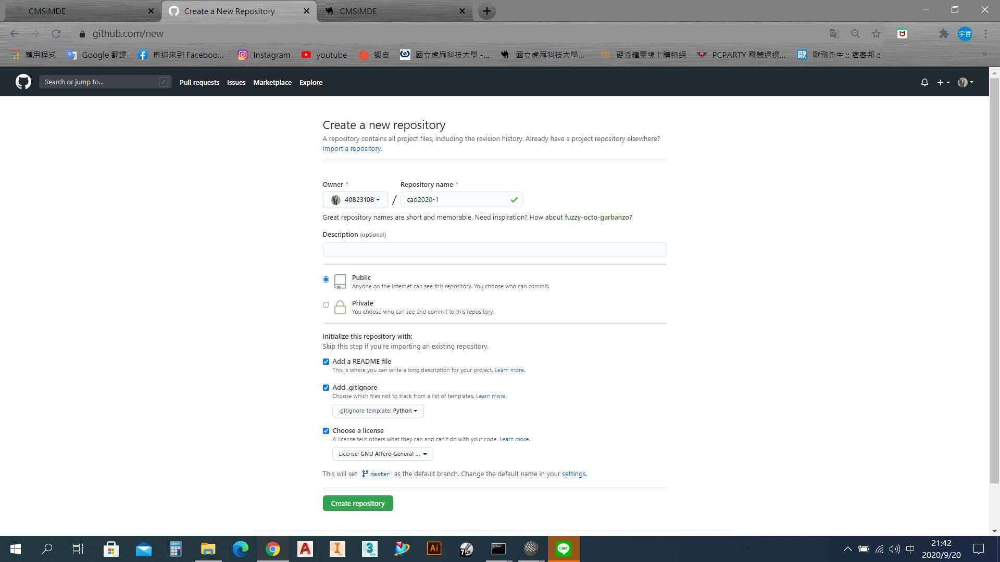
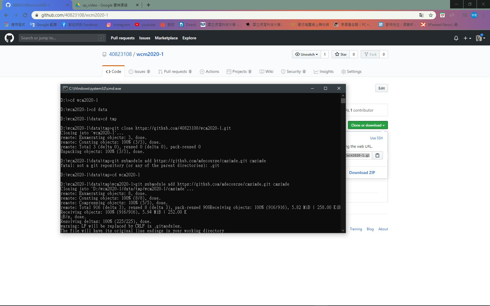
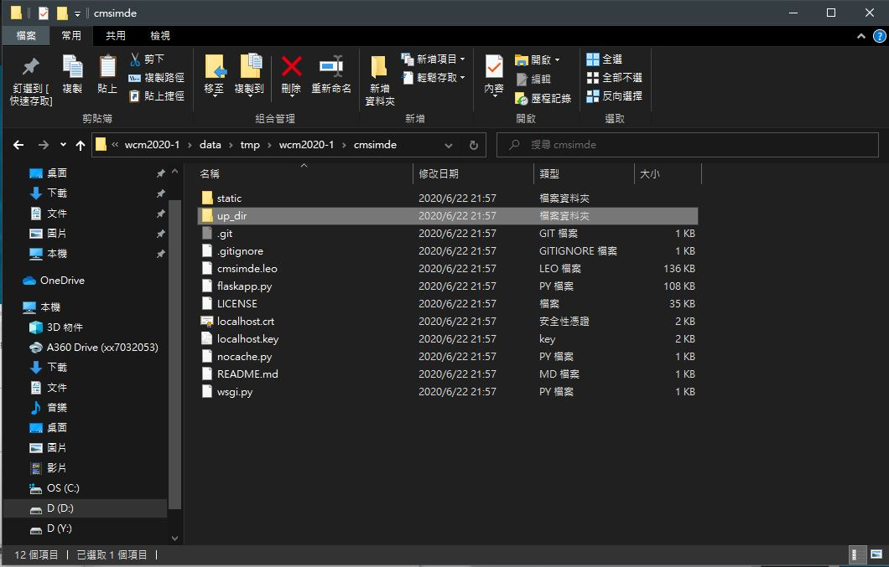
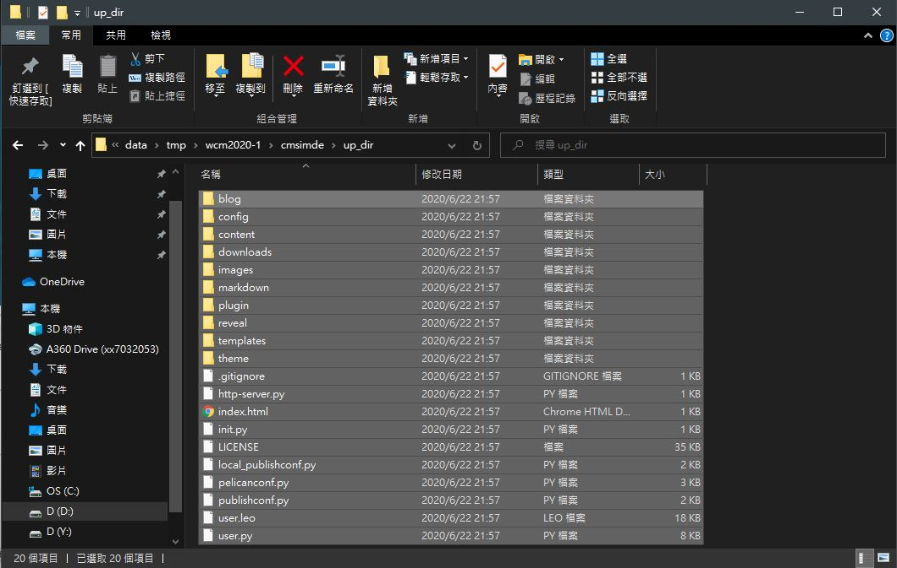
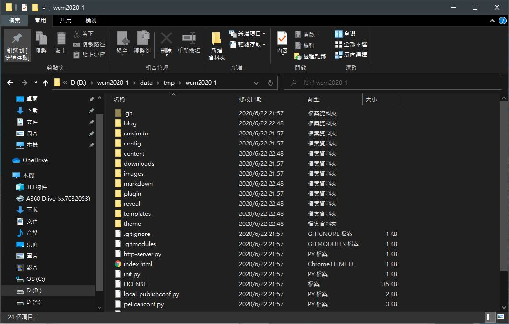
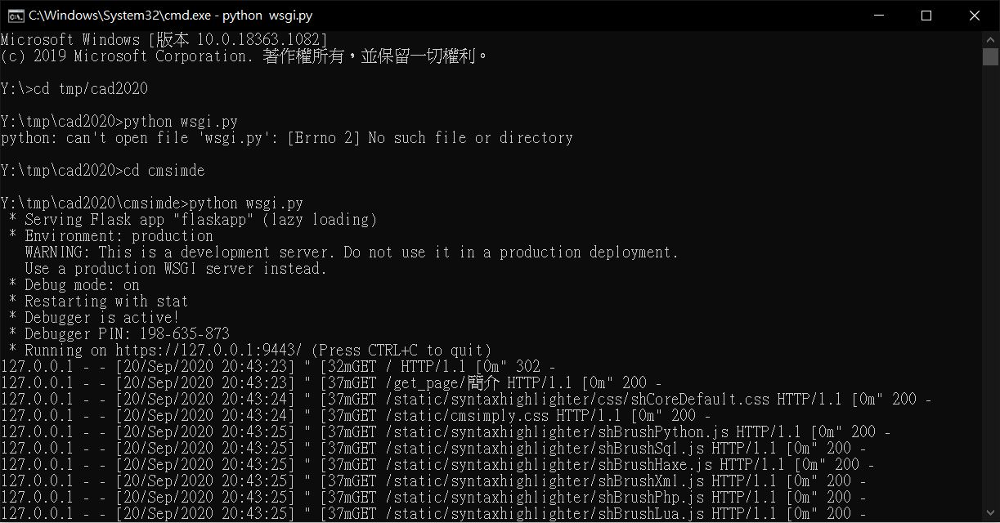

課堂內容 <<
Previous Next >> 各零件體積-1
w1
如何使用cmsimde建立網站:
參考: wcm2020
Step1:
下載fall2020_cp.7壓縮檔,解壓縮檔
再到google搜尋git windows,下載64-bit Git for Windows Portable.,解壓縮並放入PortableGit資料夾中
Step2:
將start放入(Untitled)-SciTE並修改start路徑,如下圖

Step3:
設定gitconfig,並將此檔案存入home的目錄下


儲存後重啟start
Step4:
先到自己的github建立倉儲,倉儲名稱自行命名

Step5:
到github網站git clone自己倉儲的網址,clone完後git submodule add

Step6:
把子模組cmsimde放到網頁資料夾後,進入up_ir資料夾

Step7:
把所有資料複製出

Step8:
cad2020的目錄下

Step9:
安裝 pip install flask flask_cors bs4 markdown pelicon leo
Step10:
進入cmsimde目錄下,python wsgi.py開啟動態網頁

Step11:
到google搜尋localhost9443,點選進階-->仍要前往
Step12:
輸入密碼進入
Step13:
到cmd將所有東西推送
步驟為:
1.tmp-->cad2020
2.git add .
3.git commit -m "修改內容"
4.git push
5.輸入學號,密碼
6.成功建立網站
課堂內容 <<
Previous Next >> 各零件體積-1